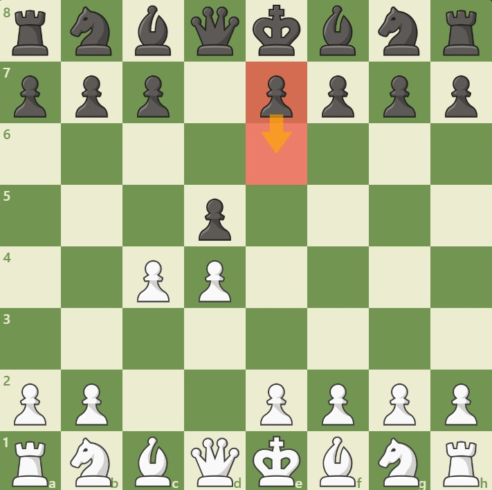
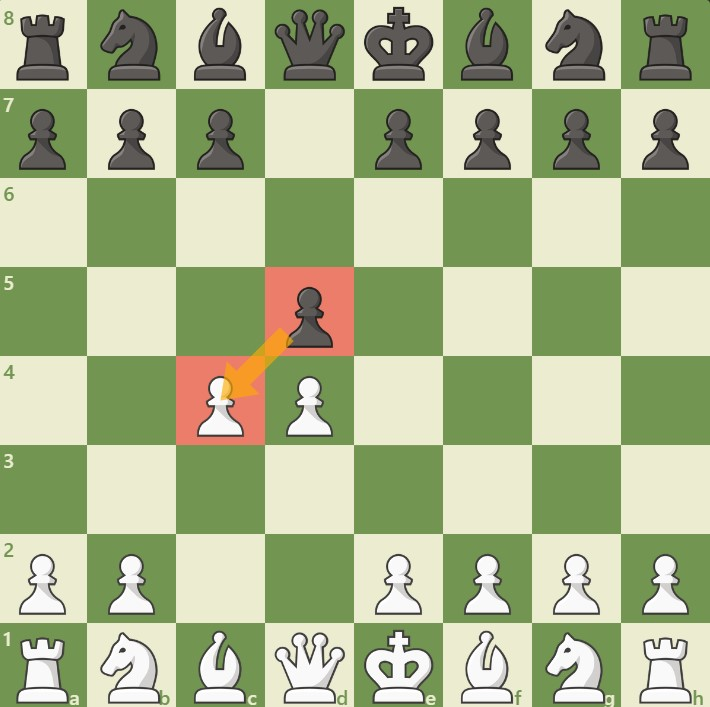

Đen không lấy tốt c4 của Trắng mà chơi e6, củng cố tốt d5 và mở đường cho tượng f8 phát triển.
Đây là một khai cuộc chiến lược, mang tính chất phòng thủ chắc chắn và tập trung vào việc kiểm soát trung tâm.
1. Biến thứ nhất: Queen’s Gambit Declined

Đen chấp nhận tốt c4, từ bỏ trung tâm để nhận lại không gian và linh hoạt trong việc phát triển quân.
Trắng sẽ cố gắng lấy lại tốt c4, thường bằng e3 hoặc Qa4+.
2. Biến thứ hai: Queen’s Gambit Accepted

3. Biến thứ ba: Phòng thủ Slav